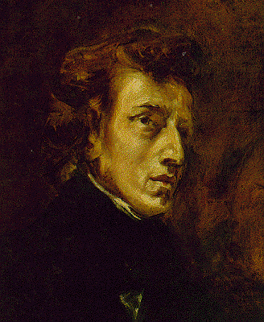
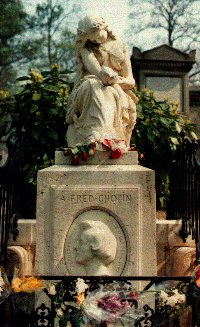

|

Texto de
Susana
Lopes de Alexandria
Deanna
Troi beijada ao som de Chopin

|
Na cena em que Deanna Troi e o
administrador Aaron se beijam, no episdio "The
Masterpiece Society", um jovem est tocando uma bela msica
ao piano. A msica uma pea de Chopin.
O compositor e pianista polons Frdric Chopin (1810-1849), ligado ao movimento romntico, considerado um dos maiores autores de msica para piano. Em 1831, passou a viver em Paris (seu pai era francs), onde se tornou famoso professor, pianista e compositor.  Retrato de Chopin pintado por Delacroix Em 1837, iniciou um romance com a escritora George Sand. O relacionamento dos dois terminou dez anos depois, em 1847, e Chopin, que j estava doente de tuberculose, morreu dois anos depois, em Paris. Seu corpo foi enterrado no famoso cemitrio parisiense de Pre-Lachaise, onde tambm esto esto enterrados outros famosos, como o cantor Jim Morrison, os escritores Oscar Wilde e Marcel Proust, a atriz Simone Signoret e Allan Kardec, o fundador do espiritismo.  Monumento a Chopin no Pre-Lachaise A msica de Chopin, romntica e lrica, caracteriza-se por suas doces melodias, ritmos delicados e beleza potica.Chopin exerceu notvel influncia sobre outros compositores, como Franz Liszt e Claude Debussy. O trabalho de Chopin inclui 24 preldios, 19 noturnos, 3 improvisos, 4 scherzos, 4 baladas e vrias valsas, mazurcas, polonesas e sonatas -- todas composies para piano. Abaixo voc encontra, em formato Midi, uma pequena seleo de algumas das mais belas e famosas composies de Chopin, inclusive o preldio tocado neste episdio da Nova Gerao. As interpretaes no so das melhores e podem, em alguns momentos, at doer nos ouvidos de quem j est familiarizado com a obra de Chopin, mas mesmo assim vale a pena conferir. Existem vrios excelentes intrpretes de Chopin, e o pianista brasileiro Arthur Moreira Lima certamente est entre eles. Mas para ouvi-los voc precisa comprar os CDs... Clique nos links para ouvir. Noturno
1 - opus 9 (12 KB) Voc pode conhecer, de graa, a maior parte da obra de Chopin. Basta procurar na Internet sites com colees de arquivos Midi com suas obras. As interpretaes, entretanto -- bom salientar -- no so as melhores. Algumas sugestes de sites: Chopin MIDI Library - http://www.gressus.se/chopin/midi/chopin.html |